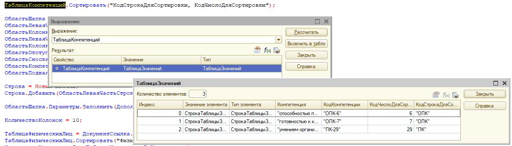

1.1.1.8. Сортировать// Как отсортировать таблицу значений по колонке в 1с 8.3, 8.2
Таб.Сортировать("ВесФрукта Возр");
ТаблицаТоваров.Сортировать("Цена");
// Как отсортировать таблицу значений по нескольким колонкам в 1с 8.3, 8.2
Таб.Сортировать("ВесФрукта Возр, Вкус Убыв");
ТаблицаКомпетенций.Сортировать("КодСтрокаДляСортировки, КодЧислоДляСортировки");

ТаблицаЗначений (ValueTable)
Сортировать (Sort)
Синтаксис:
Сортировать(<Колонки>, <ОбъектСравнения>)
Параметры:
<Колонки> (обязательный)
Список имен колонок, разделенных запятыми, по которым производится сортировка таблицы. После каждого имени колонки через пробел может быть указано направление сортировки. Направление определяется: "Убыв" ("Desc") - упорядочивать по убыванию; "Возр" ("Asc") - упорядочивать по возрастанию. По умолчанию сортировка производится по возрастанию. Порядок указания имен колонок таблицы определяет порядок сортировки. Это означает, что сначала таблица сортируется по колонке, указанной первой. Затем группы строк с одинаковым значением в этой колонке сортируются по колонке, которая указана второй, и так далее.
<ОбъектСравнения> (необязательный)
Объект для сравнения значений. Независимо от того, задан объект сравнения или нет, элементы, чьи типы не совпадают, сравниваются по коду типа, а элементы простых типов сравниваются по значению. Дополнительно к этому:
Описание:
Сортирует таблицу значений в соответствии с указанными правилами сортировки.
Доступность:
Сервер, толстый клиент, внешнее соединение, мобильное приложение (сервер).
Пример:
|